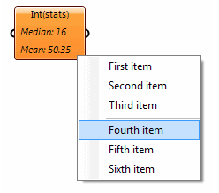
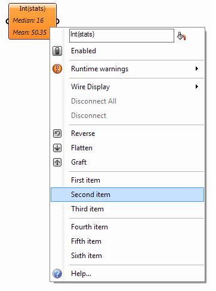

We’ll focus on components as you should be familiar with those from earlier topics, but the same logic also applies to Parameters and custom objects.
Default Functionality and GUI
When you derive a class from GH_Component or GH_Param(T) you get a lot of functionality and GUI for free. It is quite important that all the objects in Grasshopper behave in a consistent and predictable fashion so you typically don’t need to override this default behaviour. However there can be cases where changing the default Grasshopper GUI is the best solution. Overriding the GUI is not exactly a trivial task, there are a lot of different facets to this and I’ll discuss the most important ones in this topic.
There are three common ways in which the default GUI can be altered:
Menus
It is possible to insert items into the default pop-up menus of objects, or even to completely alter the menu layout. If your component for example can run in two different modes, you can choose to expose an additional GUI option instead of an input parameter. These modes can then be toggled via the component pop-up menu.
At the lowest level, pop-up menus are generated by the canvas when a right mouse button click is detected over a component or parameter. The menu by default contains no items and it is the responsibility of said component or parameter to populate the menu. The top-level method which is in charge of this is AppendMenuItems which is defined inside IGH_DocumentObject and thus propagates to all objects on the canvas.
The GH_DocumentObject abstract class does not create any menu items, so unless this function is overridden, there will be no popup menu for a certain object. However, it is unlikely you derive directly from GH_DocumentObject so this should not be a problem. GH_ActiveObject, which is the base class for all objects on the canvas that actually do something (Sketches and Scribbles don’t “do” anything, hence they derive directly from GH_DocumentObject), does provide a default implementation of AppendMenuItems(). The default layout of popup menus is:
- NickName
- Preview
- Enabled
- Bake
- Warnings
- Errors
- Help
Although if the object in question does not support previews or baking then those items will be missing from the final menu. When overridden, AppendMenuItems() allows you to completely replace the default menu:
public override bool AppendMenuItems(ToolStripDropDown menu)
{
Menu_AppendGenericMenuItem(menu, "First item");
Menu_AppendGenericMenuItem(menu, "Second item");
Menu_AppendGenericMenuItem(menu, "Third item");
Menu_AppendSeparator(menu);
Menu_AppendGenericMenuItem(menu, "Fourth item");
Menu_AppendGenericMenuItem(menu, "Fifth item");
Menu_AppendGenericMenuItem(menu, "Sixth item");
// Return true, otherwise the menu won't be shown.
return true;
}
Public Overrides Function AppendMenuItems(ByVal menu As ToolStripDropDown) As Boolean
Menu_AppendGenericMenuItem(menu, "First item")
Menu_AppendGenericMenuItem(menu, "Second item")
Menu_AppendGenericMenuItem(menu, "Third item")
Menu_AppendSeparator(menu)
Menu_AppendGenericMenuItem(menu, "Fourth item")
Menu_AppendGenericMenuItem(menu, "Fifth item")
Menu_AppendGenericMenuItem(menu, "Sixth item")
'Return True, otherwise the menu won't be shown.
Return True
End Function

If you want to insert additional items into the menu it would be very annoying if you had to recreate this default menu layout from scratch every single time. So even though you can override AppendMenuItems() it is recommended you instead override AppendAdditionalMenuItems() which allows you to insert custom menu items between Errors and Help without losing the standard functionality:
public override void AppendAdditionalMenuItems(ToolStripDropDown menu)
{
base.AppendAdditionalMenuItems(menu);
Menu_AppendGenericMenuItem(menu, "First item");
Menu_AppendGenericMenuItem(menu, "Second item");
Menu_AppendGenericMenuItem(menu, "Third item");
Menu_AppendSeparator(menu);
Menu_AppendGenericMenuItem(menu, "Fourth item");
Menu_AppendGenericMenuItem(menu, "Fifth item");
Menu_AppendGenericMenuItem(menu, "Sixth item");
}
Public Overrides Sub AppendAdditionalMenuItems(ByVal menu As ToolStripDropDown)
MyBase.AppendAdditionalMenuItems(menu)
Menu_AppendGenericMenuItem(menu, "First item")
Menu_AppendGenericMenuItem(menu, "Second item")
Menu_AppendGenericMenuItem(menu, "Third item")
Menu_AppendSeparator(menu)
Menu_AppendGenericMenuItem(menu, "Fourth item")
Menu_AppendGenericMenuItem(menu, "Fifth item")
Menu_AppendGenericMenuItem(menu, "Sixth item")
End Sub

GH_Param<T> for example derives from GH_ActiveObject and re-implements AppendAdditionalMenuItems() in order to supply the Wire Display, Disconnect, Reverse, Flatten and Graft menu items that are present in all parameters. GH_Component, likewise, derives from GH_ActiveObject and it re-implements AppendAdditionalMenuItems() in order to insert the Shortest List, Longest List, Cross Reference and the parameter submenus.
Long story short; if you wish to insert additional menu items then either re-implement AppendAdditionalMenuItems() if you derive from GH_Param<T> or re-implement AppendAdditionalComponentMenuItems() if you derive from GH_Component:
// If you implement IGH_Param, then override this method. If you implement IGH_Component,
// then override AppendAdditionalComponentMenuItems instead.
protected override void AppendAdditionalMenuItems(ToolstripDropDown menu)
{
// Place a call to the base class to ensure the default parameter menu
// is still there and operational.
base.AppendAdditinalMenuItems(menu);
// Now insert your own custom menu items.
Menu_AppendGenericMenuItem(menu, "My Custom Menu Item", Menu_MyCustomItemClicked);
}
private void Menu_MyCustomItemClicked(Object sender, EventArgs e)
{
Rhino.RhinoApp.WriteLine("Alcohol doesn't affect me...");
}
'If you implement IGH_Param, then override this method. If you implement IGH_Component,
'then override AppendAdditionalComponentMenuItems instead.
Protected Overrides Sub AppendAdditionalMenuItems(ByVal menu As ToolstripDropDown)
'Place a call to the base class to ensure the default parameter menu
'is still there and operational.
MyBase.AppendAdditinalMenuItems(menu)
'Now insert your own custom menu items.
Menu_AppendGenericMenuItem(menu, "My Custom Menu Item", Addressof Menu_MyCustomItemClicked)
End Sub
Private Sub Menu_MyCustomItemClicked(ByVal sender As Object, ByVal e As EventArgs)
Rhino.RhinoApp.WriteLine("Alcohol doesn't affect me...")
End Sub
There’s a lot of menu utility functions provided by GH_DocumentObject. They all start with “Menu_” and they’ll make it much easier to insert formatted menu items. But of course nothing is stopping you from using typical System.Windows.Forms plumbing to extend the pop-up menu.
Interaction
You can also choose to handle specific mouse and keyboard events. You could for example choose to respond to a mouse double-click event on your component. Complicated objects such as Gradients and Graph Mappers handle all sorts of mouse events to provide grip-dragging functionality directly within the Grasshopper canvas.
Display
Finally, it is possible to override the way an object displays itself on the canvas. These alterations can be minor, mere additions to the default display, or they can be radically different (as with the Gradient and Graph Mapper objects). For a detailed explanation regarding display overrides, see the Custom Attributes guide.